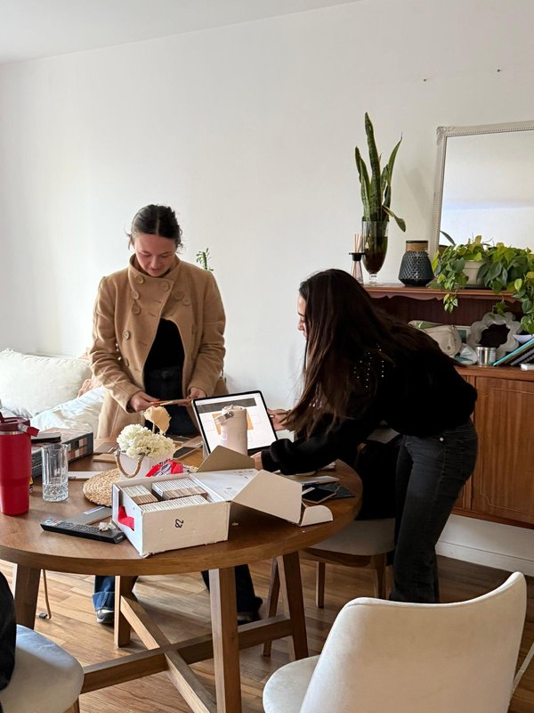
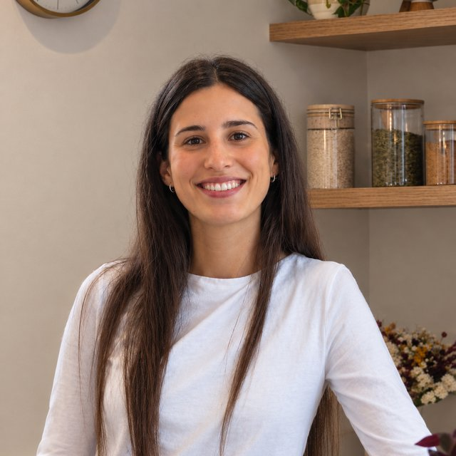
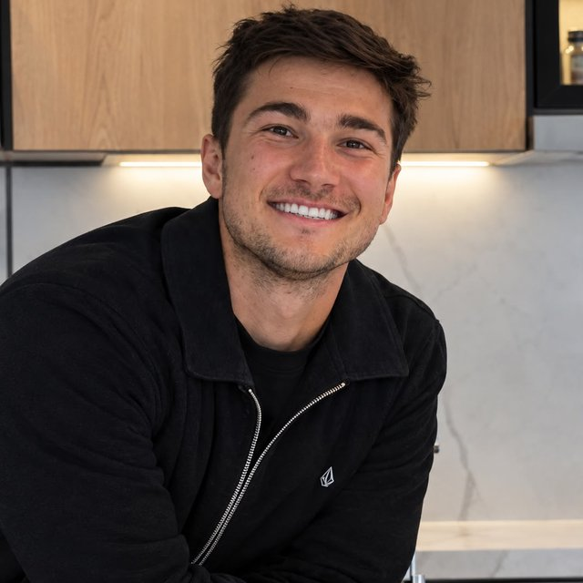
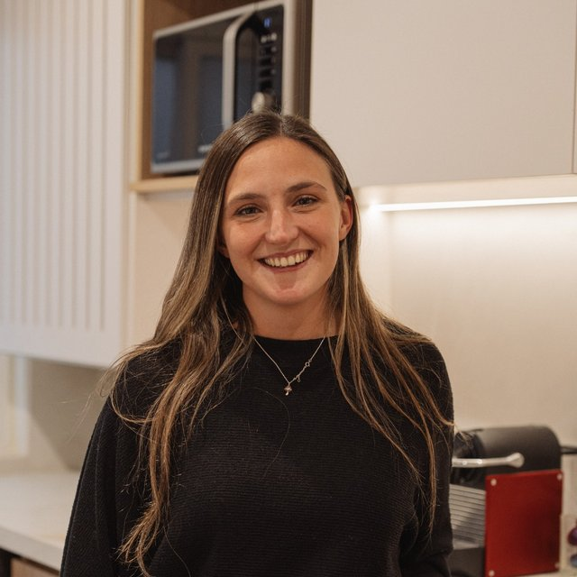

Una cocina diseñada para vos, y una reforma clara y sin estrés
Te acompañamos a definir la distribución, materiales y cada detalle de tu cocina para que puedas visualizar el resultado antes de ejecutar y avanzar con seguridad, sin improvisaciones ni decisiones a ciegas.
Nos encargamos de diseñar y planificar tu cocina de principio a fin
Para que puedas disfrutar del proceso con la tranquilidad de saber que cada decisión está pensada antes de empezar. Te ayudamos a lograr dos cosas:
Tener una cocina única, funcional y pensada para vos.
Diseñamos cada detalle según tu espacio, tus hábitos y tu estilo, para que el resultado no solo se vea increíble, sino que funcione en tu día a día.
Un proceso ordenado, sin sorpresas.
Te acercamos un presupuesto de ejecución claro para que puedas tener una reforma ordenada y sin estrés. Planificamos y definimos cada decisión antes de ejecutar, para reducir imprevistos y que sepas qué va a pasar en cada etapa.
Un proceso pensado para que tomes cada decisión con seguridad
No es magia: es un sistema de cuatro etapas, diseñado para que llegues a la mejor versión de tu cocina sin improvisar sobre la marcha.

Diagnóstico & Inspiración
Entendemos cómo usás el espacio, qué necesitás, qué querés cambiar y cuáles son tus prioridades. Relevamos medidas, referencias, hábitos, equipamiento y materiales para empezar el proyecto con toda la información necesaria.
Diseño & Visualización
Trabajamos distintas alternativas de distribución y funcionalidad hasta encontrar la mejor solución. Luego definimos materiales, interiores, herrajes, iluminación y equipamiento, y lo visualizamos con renders realistas hasta llegar al diseño final.
Entrega & Plan de acción
Mientras avanzamos con el diseño, comenzamos a cotizar el proyecto para poder tomar decisiones teniendo en cuenta costos reales. Te entregamos la documentación, especificaciones y toda la información necesaria para llevarlo a la realidad.
Ejecución & Seguimiento
Aprobado el presupuesto, se entrega un cronograma de obra e instalación para que el diseño se ejecute tal cual fue planificado, coordinando con carpinteros y proveedores en cada etapa.
Dejá de posponer el sueño de tu cocina nueva
Es hora de cambiar. Pasá de manejar tu reforma sola/o a tener un equipo que te acompaña en cada etapa y te da resultados.
Reformando sin CUAN
- ✕Pedís presupuestos por tu cuenta y no sabés bien qué comparar.
- ✕Coordinás vos misma/o todos los rubros: carpintero, marmolero, plomero, gasista y electricista.
- ✕Arrancás la obra sin un diseño cerrado.
- ✕Vas resolviendo el diseño sobre la marcha, en plena obra.
- ✕El presupuesto se corre y los tiempos se estiran.
- ✕Terminás siendo vos quien resuelve cada imprevisto.
Diseñando y reformando con CUAN
- ✓Te asegurás de llegar a la mejor versión de tu cocina, con un diseño pensado para vos.
- ✓Te entregamos el diseño completo antes de empezar la obra.
- ✓Un director de obra compra los materiales, coordina los rubros y ejecuta tu cocina tal cual fue diseñada.
- ✓Sabés desde el día uno el costo y el tiempo de tu reforma.
- ✓Tenés un solo interlocutor durante todo el proceso, de punta a punta.
- ✓Pedís y comparás presupuestos de forma clara, con la misma base para todos los contratistas.
Cocinas pensadas para cada espacio, cada familia y cada forma de vivir
Más de 100 proyectos ya pasaron por nuestro proceso de diseño.


Proyecto Belgrano — reforma integral de cocina, de principio a fin.
 Reforma integral · Belgrano
Reforma integral · Belgrano
 Cocina integrada · Belgrano Sucre
Cocina integrada · Belgrano Sucre
 Cocina a medida · Devoto
Cocina a medida · Devoto
 Cocina a medida · Martínez
Cocina a medida · Martínez
 Interiorismo · Ituzaingó
Interiorismo · Ituzaingó
 Cocina a medida · Castelar
Cocina a medida · Castelar
Conocé cada proyecto en detalle, con toda la galería de fotos.
Ver todos los proyectos
Dos miradas, una misma idea
Somos Valentina y Juan Segundo, y llegamos a CUAN desde mundos diferentes pero complementarios. Valentina, desde la arquitectura, el interiorismo, el diseño y la obra, aporta una mirada enfocada en transformar cada espacio desde la estética, la funcionalidad y, sobre todo, desde cómo lo vive cada persona.
Juan Segundo, desde su experiencia en procesos, organización y experiencia del cliente, aporta una mirada enfocada en hacer que un proyecto lleno de decisiones pueda vivirse de una manera clara, ordenada y acompañada.
De la combinación de esas dos miradas nació CUAN, con una misma idea: crear una experiencia distinta a la que muchas personas imaginan cuando piensan en diseñar o reformar su casa.
Con el tiempo nos especializamos en cocinas y desarrollamos un proceso propio que une diseño, funcionalidad, visualización y planificación, para que nuestros clientes no solo lleguen a un espacio que los represente, sino que puedan disfrutar también del camino para hacerlo realidad. Hoy trabajamos junto a un equipo que comparte esa misma forma de hacer las cosas, acompañando cada proyecto desde las primeras ideas hasta el momento de llevarlo a obra.
No vas a estar solo/a: este es el equipo que te va a acompañar

Arq. Valentina Cuan
Fundadora

Lic. Juan Segundo Arando
Cofundador

Arq. Sofía Garbarino
Equipo de diseño
Arq. Antonela Dcillis
Equipo de diseño
Arq. Melina Corona
Equipo de diseño
Arq. Martina Maraviglia
Equipo de diseño
Arq. Paula
Equipo de diseño
Arq. Mercedes
Equipo de diseño
Lo que dicen quienes ya vivieron su reforma con nosotros
“Llegamos con muchas dudas y salimos con un proyecto claro, con costos y tiempos definidos desde el primer momento.”
“El diseño en 3D nos permitió ver exactamente cómo iba a quedar antes de romper una sola pared.”
“Tener un solo interlocutor durante toda la obra nos ahorró tiempo, plata y muchos dolores de cabeza.”
Los testimonios en video de Pamela y Sofi son reales. Las 3 citas de texto son de referencia y se reemplazarán por más testimonios reales a medida que los sumemos.
Todo lo que necesitás saber antes de empezar
Las cocinas son nuestra especialidad y el principal foco de CUAN, pero también diseñamos otros espacios interiores. Si tu proyecto incluye otros ambientes, podemos evaluarlos juntos y armar una propuesta acorde al alcance que necesitás.
Sí. Nuestro servicio de diseño es independiente de la ejecución. Te entregamos el proyecto desarrollado y la documentación necesaria para que puedas cotizarlo y llevarlo adelante con los proveedores que elijas. Si preferís que nosotros te acompañemos también en la ejecución, podemos hacerlo.
Sí. Una vez terminado el diseño, podemos acompañarte en la ejecución para que lo proyectado se lleve a la realidad de la manera en que fue pensado. La ejecución se cotiza por separado, por lo que podés decidir cómo querés continuar una vez que tengas el proyecto definido.
No. Si avanzamos juntos con la ejecución, podemos coordinar los distintos rubros que necesite el proyecto: carpintería, electricidad, iluminación, revestimientos, mesadas, pintura, instalaciones y demás trabajos necesarios según cada caso.
El plazo depende de la escala del proyecto y de los tiempos de definición de cada cliente. Trabajamos por etapas para que cada decisión se tome en el momento correcto y el proyecto pueda avanzar de manera ordenada — en la primera reunión te contamos el plazo estimado para tu caso puntual.
No trabajamos con una cantidad limitada de correcciones. Queremos que el proyecto quede realmente definido antes de llevarlo a la realidad, por eso vamos ajustándolo juntos durante el proceso hasta llegar a un resultado con el que estés seguro.
Trabajamos principalmente en CABA y Gran Buenos Aires para proyectos que requieren relevamiento y acompañamiento presencial. También podemos trabajar en proyectos fuera de Buenos Aires bajo una modalidad adaptada a cada caso.
Sí. De hecho, muchos clientes llegan a CUAN con la obra ya iniciada. Analizamos qué está definido, qué instalaciones o decisiones debemos respetar y qué todavía podemos modificar para desarrollar el mejor proyecto posible desde ese punto.
Sí. No necesitás llegar con todo definido. Parte de nuestro trabajo es ayudarte a ordenar tus ideas, entender qué necesitás y encontrar una estética que te represente. Podemos partir de referencias, gustos e incluso de aquello que sabés que no querés.
Sí. Esa es una parte fundamental de nuestro proceso. Antes de ejecutar desarrollamos el proyecto en 3D y renders realistas para que puedas visualizar materiales, distribución y decisiones de diseño antes de llevarlas a la realidad.